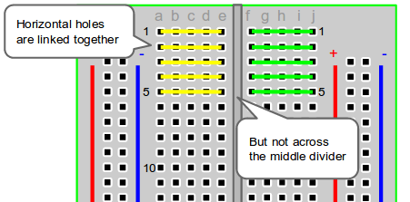

Capítulo 1 · Fundamentos de Electrónica para Robótica y Domótica
Objetivo: Comprender los conceptos base de electricidad y electrónica (V, I, R, P, AC/DC), conocer componentes y equipos de medición, evitar errores típicos de montaje y construir un primer circuito funcional con el temporizador 555.
1. ¿Por qué electrónica en robótica/domótica?
La robótica y la domótica integran sensores, actuadores y controladores. La electrónica es el lenguaje físico que permite que la información (señales) se convierta en acciones (movimiento, luz, sonido, comunicación). Dominar los fundamentos te permitirá diagnosticar fallas y construir soluciones fiables.

2. Conceptos eléctricos esenciales

2.1 Voltaje (V)
- Definición: Diferencia de potencial eléctrico. Es la “presión” que empuja a los electrones.
- Unidad: Volt (V).
- Analogía hidráulica: Presión del agua en una tubería.
2.2 Corriente (I)
- Definición: Flujo de carga por unidad de tiempo.
- Unidad: Ampere (A).
- Analogía hidráulica: Caudal de agua (litros/segundo) en una tubería.
2.3 Resistencia (R)
- Definición: Oposición al paso de la corriente.
- Unidad: Ohm (Ω).
- Ejemplo: Un resistor “estrecha” la tubería, limitando el caudal (corriente).
2.4 Ley de Ohm
Ejemplo numérico: LED rojo (≈2.0 V) con fuente de 5 V a 10 mA deseados:
2.5 Potencia (P)
- Definición: Tasa de transferencia de energía.
- Fórmulas:
- Unidad: Watt (W).
- Implicación práctica: Verifica la potencia del resistor (¼ W, ½ W, etc.) para evitar sobrecalentamientos.
RESUMEN RÁPIDO:

2.6 Corriente continua (DC) vs. alterna (AC)
- DC: La polaridad no cambia con el tiempo (baterías, fuentes reguladas 5 V/12 V).
- Las baterías, pilas y paneles solares generan corriente continua (DC) porque los electrones fluyen naturalmente en un solo sentido.
- Problema: si quieres mandar energía a muchos kilómetros, las pérdidas son grandes.
- AC: La polaridad cambia periódicamente (red eléctrica; 60 Hz en México).
- Cuándo usar:
- DC: Electrónica, microcontroladores, sensores, la mayoría de robots.
- AC: Alimentación de alta potencia y larga distancia (⚠️ No trabajar AC de red en protoboard).


3. ¿Qué es un circuito?

Un circuito es un camino cerrado para que la corriente fluya desde la fuente (V+) y regrese a su referencia (GND). Si el camino no se cierra, no hay corriente; si hay un atajo directo V+→GND, hay un corto.
- Circuito en serie: La corriente es la misma por todos los elementos.
- Circuito en paralelo: El voltaje es el mismo en todas las ramas.
4. Errores comunes (y cómo evitarlos)
- Cortos: Puentes directos entre V+ y GND por cables mal puestos → usa el multímetro en continuidad antes de energizar.
- Circuito abierto: Falta cerrar el lazo (olvidar la conexión a GND común).

- LED sin resistor: El LED se quema → siempre limita corriente con un resistor calculado.
- Polaridad invertida: Diodos/LEDs/capacitores electrolíticos/IC con orientación incorrecta → ubica pin 1 y marcas de cátodo/anodo.
- Protoboard mal usada: Rails de alimentación rotos a mitad o no comunes → verifica continuidad de rieles.
- No compartir tierra: Varios módulos o fuentes sin GND común → el sistema “no se ve”.
- Resistencia mal elegida: Confundir kΩ con Ω → revisa el código de colores o el multímetro.
- Medir corriente como voltaje: Colocar el multímetro en A en paralelo causa cortos. Para corriente: en serie y con cable al borne de A.
5. Componentes básicos
5.1 Protoboard (breadboard)
- Permite prototipado sin soldadura.
- Conexiones internas: Columnas/filas internas y rieles de V+/GND (a veces interrumpidos).
- Buenas prácticas: Cables cortos, colores consistentes (rojo=V+, negro=GND).


5.2 Resistores
- Limitan corriente, fijan tensiones, forman redes temporizadoras.
- Código de colores y tolerancia (±1 %, ±5 %, etc.).
- Potencia: ¼ W típico en prototipos.

5.3 LEDs (diodos emisores de luz)
- Polaridad: Ánodo (+) y cátodo (−, patita más corta o lado plano).
- Vf típica: Rojo (1.8–2.2 V), verde/azul/blanco (2.0–3.3 V).
- Siempre con resistor en serie.
5.4 Capacitores
- Función: Almacenan energía. Filtrado, temporización, acoplo.
- Tipos: Cerámicos (no polarizados), electrolíticos (polarizados).
- Parámetros: Capacitancia (µF, nF), tensión máxima (Vmax). Nunca exceder Vmax.

5.5 Circuitos integrados (IC)
- Paquetes DIP/SOIC/QFN, etc. Pin 1 marcado con punto o muesca.
- Alimentación: Vcc y GND en pines específicos (lee la hoja de datos).
5.6 Fuentes de energía
- Baterías (9 V, 18650, LiPo—con cuidado).
- Fuentes de banco reguladas.
- Convertidores DC-DC (buck/boost).
- Regla de oro: GND común entre todos los módulos.
6. Equipos de medición
6.1 Multímetro digital (DMM)
- Voltaje DC/AC: Medir en paralelo al elemento (configurar V, puntas en VΩ y COM).
- Corriente DC: Medir en serie (mover punta roja al borne de A/mA, rango adecuado).
- Resistencia: Medir con circuito desenergizado.
- Continuidad/diode test: Verifica cortos y orientación de diodos.

- Pantalla: Donde se muestran las lecturas de las mediciones.
- Dial de selección: Se utiliza para seleccionar el tipo de medición. Las opciones incluyen:
- Voltaje de CC (V-)
- Voltaje de CA (V~)
- Voltaje de CC (mV-)
- Continuidad (simbolizada por una onda sonora)
- Resistencia (Ω)
- Capacitancia (-||-)
- Probador de diodos (―⯈⊢)
- Corriente continua (A-)
- Corriente alterna (A~)
- Puertos para cables de prueba:
- COM (Común): Donde se conecta el cable negro.
- VΩ: Se utiliza para voltaje, resistencia y otras opciones sin corriente. El cable rojo se conecta aquí para estas funciones.
- 10 A: Se utiliza exclusivamente para mediciones de alta corriente (hasta 10 amperios). El cable rojo se conecta aquí para estas funciones.
- Cables de prueba: rojo para positivo, negro para negativo, se utilizan para conectar el multímetro al objeto que se está midiendo.
- Rango: Permite que el multímetro seleccione el rango adecuado para la medición. De lo contrario, intenta seleccionar automáticamente el correcto.
- Botón HOLD: Congela la lectura actual en la pantalla para facilitar la visualización.
- Botón Max/Min: se utiliza para mantener leído el valor máximo o mínimo.
6.2 Osciloscopio
- Sonda x1/x10: Usar x10 reduce carga sobre el circuito.
- Clip de tierra: Conectar a GND del circuito (⚠️ los osciloscopios de banco suelen tener tierra referida a chasis; evita conectar a red AC sin aislamiento).
- Qué observar: Forma de onda, frecuencia, amplitud, duty cycle.

- Pantalla: Muestra las formas de onda. La cuadrícula muestra el voltaje (vertical) y el tiempo (horizontal).
- Botón de encendido: enciende o apaga el osciloscopio.
- Entradas de canal (CH1 y CH2): Terminales de entrada para conectar señales a medir.
- Controles verticales: Ajusta la escala del voltaje en la pantalla. La opción "Posición" mueve las formas de onda verticalmente.
- Controles horizontales: Ajusta la escala de tiempo. La opción "Posición" mueve las formas de onda horizontalmente.
- Controles de disparo: Establece las condiciones para el inicio de la captura de forma de onda. El nivel establece el voltaje de disparo.
- Botón Ejecutar/Detener: inicia o detiene la captura de forma de onda.
- Botón de medición: herramientas para medir las características de la forma de onda.
- Botón del cursor: Herramientas para medir características de forma de onda.
7. El temporizador 555
7.1 ¿Qué es el 555?
Un IC clásico con dos comparadores, un flip-flop SR y un transistor de descarga. Permite crear temporizadores y osciladores con muy pocos componentes.
- Modos de operación:
- Astable: Oscilador libre (parpadeos, PWM simple).
- Monostable: Pulso único temporizado (retardos, anti-rebote).
- Biestable: Conmutación tipo flip-flop.
7.2 Pinout del 555 (DIP-8)
- GND
- TRIG (disparo, umbral 1/3 Vcc)
- OUT (salida)
- RESET (activo en bajo; normalmente a Vcc)
- CTRL (control; típicamente con 10 nF a GND)
- THRES (umbral, 2/3 Vcc)
- DISCH (descarga del capacitor)
- Vcc (alimentación 5–15 V típicamente)
8. Ejercicio guiado: 555 en astable (LED parpadeante)
8.1 Objetivo
Construir un oscilador que haga parpadear un LED y medir su frecuencia/duty con multímetro (si tiene frecuencia) u osciloscopio.

8.2 Materiales
- 1 × NE555 (DIP-8)
- 1 × LED
- 1 × Resistor para LED (330 Ω o 470 Ω)
- 2 × Resistores temporizadores (ver diseño)
- 1 × Capacitor de temporización (ver diseño)
- 1 × Capacitor 10 nF para pin 5 (CTRL) → estabilidad
- Protoboard, cables, fuente 5 V regulada
8.3 Diseño (frecuencia y ciclo de trabajo)

8.4 Conexión (paso a paso)
- Coloca el NE555 en la protoboard, centrado en el canal. Identifica pin 1 (GND) y pin 8 (Vcc) por la muesca/punto.
- Alimentación: Pin 8 a +5 V y pin 1 a GND.
- Reset: Pin 4 a +5 V.
- Control: Pin 5 a GND mediante 10 nF.
- Temporización:
- Conecta \( R_A \) entre Vcc (5 V) y pin 7 (DISCH).
- Conecta \( R_B \) entre pin 7 (DISCH) y pin 2/6 (TRIG/THRES unidos).
- Conecta el capacitor C entre pin 2/6 y GND (si es electrolítico, lado − a GND).
- Salida: Pin 3 → resistor 330 Ω → LED → GND (cátodo a GND).
- Revisa todo con continuidad antes de energizar.
8.5 Lista de verificación (debug)
- [ ] LED está al revés.
- [ ] Falta resistor en LED.
- [ ] Capacitor electrolítico invertido.
- [ ] Pin 4 (RESET) flotante (debe ir a Vcc).
- [ ] Falta unión 2–6 (TRIG y THRES).
- [ ] \( R_A \) o \( R_B \) con valor equivocado (Ω vs kΩ).
- [ ] Rieles de la protoboard no están realmente conectados.
- [ ] No hay GND común.
9. Seguridad básica
- Nunca conectes AC de red a protoboard.
- Desenergiza antes de cambiar conexiones.
- Verifica continuidad para evitar cortos.
- En osciloscopios de banco, el clip de tierra suele ir a tierra física: evita medir directamente la red eléctrica.
Glosario rápido
- V (voltaje): “presión” eléctrica.
- I (corriente): flujo de carga.
- R (resistencia): oposición al flujo.
- P (potencia): energía por unidad de tiempo.
- DC/AC: corriente continua/alterna.
- 555: temporizador/oscila­dor versátil.